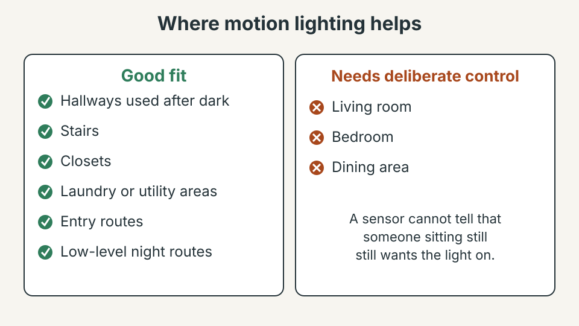
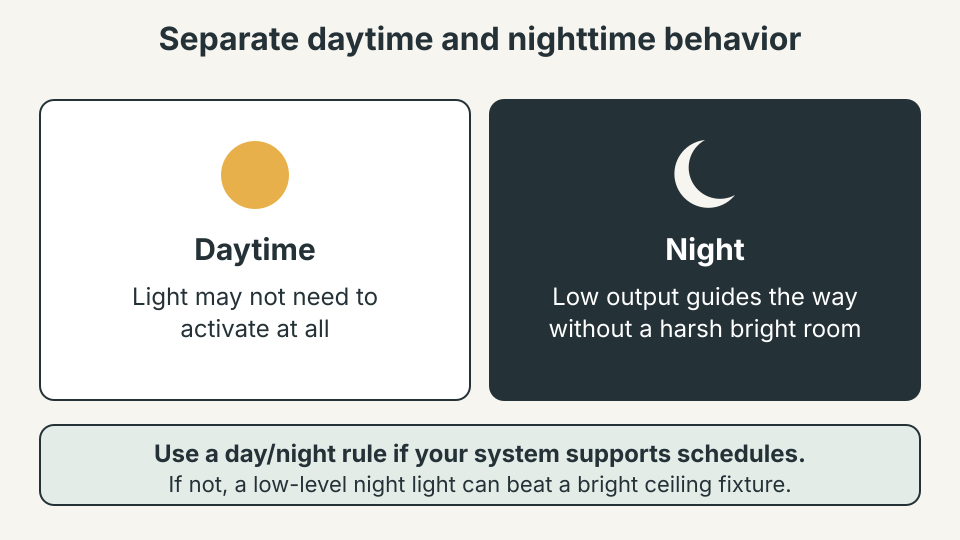

SMART HOME · LIGHTING
Where Motion Lighting Helps — and Where It Just Gets Annoying
Motion lighting works best when it removes a repeated inconvenience without demanding attention. The goal is not to automate every light, but to make a few specific routines easier, safer and more comfortable.

1. Start with the repeated problem, not the gadget
Before choosing a sensor, describe the annoyance in one sentence. “The hallway is dark when I carry laundry upstairs” is a useful problem statement; “I want the house to be smarter” is not. Observe the route for a few normal days: when the light is needed, how long the task lasts, whether hands are occupied and whether other people use the space differently. If a room already has an easy switch that people naturally use, a sensor adds little and becomes one more device to maintain.
2. Choose locations where hands-free light genuinely helps

Motion lighting suits short-use spaces where people move through rather than settle.
| Good fit | Why |
|---|---|
| Hallways used after dark | People pass through |
| Stairs | Carrying objects makes a switch inconvenient |
| Closets | Both hands may be occupied |
| Laundry or utility areas | Lights are easy to forget |
| Entry routes | People arrive carrying bags |
| Low-level night routes | A full room light would be too bright |
A living room, bedroom or dining area usually works better with deliberate control, because a motion sensor cannot tell that a person sitting still still wants the light on.
3. Map the actual walking path
Placement matters more than a high-sensitivity setting. Stand where a person normally enters and imagine the detection field: it should see the movement that matters and avoid routes that should not trigger. A sensor aimed through an open doorway may catch people passing the doorway rather than entering; one hidden behind furniture misses the start of the route; one whose view a door blocks works only when the door is open.

4. Set the timeout around the real task
A timeout that is too short switches the light off mid-task; one that is much too long wastes energy and feels unresponsive. Start conservatively and adjust after real use. A short hallway may need only a minute or two; a utility area may need longer because someone can stand still sorting laundry. If the light switches off unexpectedly, check sensor placement before lengthening the timeout: if normal movement is outside the detection area, a longer timer only masks the issue.
5. Separate daytime and nighttime behavior
During the day a motion light may not need to activate at all. At night, a lower output guides someone safely without turning a dark hallway into a bright room. Use a simple day/night rule if your system supports schedules; if not, a low-level night light may beat forcing a bright ceiling fixture to act like a bedside lamp.

6. Use the lowest useful brightness
More light is not automatically better. In a short passage the aim is to reveal steps, a doorway or an obstacle, not to light the whole room. Start at a comfortable level and increase it only if the route stays difficult. Also watch glare: a bright fixture in the field of view is uncomfortable at night, and diffused or indirect light can give the same benefit with less disruption.
7. Check for false triggers before increasing sensitivity
False triggers mean the sensor sees something you did not intend to automate: a nearby doorway, a busy corridor, a pet route or another moving object. Raising sensitivity can make it worse. Identify the trigger first, then change the angle, mounting position or detection area, and test at the times when false triggers happen. One small positional change often beats repeated software tweaks.
8. Avoid the sensor-everywhere trap
Once one motion light works, it is tempting to automate every room. Each sensor adds a device that may need batteries, configuration, firmware updates or troubleshooting. Automate a repeated action only when the automation is easier than doing it manually: a dark stairway used many times each evening qualifies; a reading lamp you switch on deliberately does not.
9. Think about stationary users
Motion sensors detect movement, not intention. Someone reading in a chair near a hallway, folding clothes or standing still at a cupboard may move less than the sensor expects. If the light goes off during a normal task, first test whether the sensor can see the person's position. If it can, a slightly longer timeout may fix it; if not, change the angle or add a better-positioned control.
10. Test the route before finalizing the setup
Test the complete route, not just the spot under the sensor: walk in from the normal entrance carrying what you usually carry, and repeat from both directions if people approach from more than one.
- Enter using the normal path.
- Check how quickly the light responds.
- Perform the real task rather than a simulated gesture.
- Wait without exaggerated movement to see whether the timeout is comfortable.
- Leave the space and confirm that the light turns off as intended.
- Repeat at night if nighttime behavior is different.
11. Keep controls simple when automation fails
Automation should not remove the manual fallback. If the sensor fails, the battery is empty or the network is down, people must still be able to use the space safely.
Safety first. Follow the manufacturer's installation instructions and local electrical requirements. Use a qualified electrician for any wiring change you are not trained or authorized to perform. Leave a clear manual switch in every room, and never rely on motion lighting alone for stairs or other places where a failure could cause a fall.
12. Protect comfort near sleeping areas
A bright motion light near a bedroom can wake someone or make it hard to return to sleep. Use low-level output where possible and keep the brightest part of the fixture pointed away from the bed. A small dedicated night light is sometimes simpler: if a tiny, predictable light solves the route without configuration, it may be the better system there.
13. Review battery and maintenance needs
Battery-powered sensors create a maintenance task. Put them where the battery is easy to reach and note which ones need replacing: a sensor that silently stops because of a depleted battery is more annoying than the original switch. For connected systems, keep integrations to a reasonable number so a temporary network problem does not affect a basic household task; local or direct control is valuable where the device supports it.
Common motion-lighting mistakes
- Installing a sensor before observing the real problem.
- Pointing the sensor at the wrong traffic path.
- Using maximum sensitivity to compensate for poor placement.
- Setting an excessively long timeout instead of fixing detection.
- Using bright night lighting where low-level guidance would work.
- Automating rooms where deliberate control is actually easier.
- Changing several settings at once and losing track of what fixed the problem.
- Ignoring the manual fallback or maintenance requirements.
What to check before you buy a motion sensor
Most disappointment with motion lighting comes from the wrong sensor in the wrong place. Walk the route first and write down these details.
| Check | What to look for |
|---|---|
| Detection range and angle | Sensors are rated for a distance and a field of view. The practical range is often shorter than the number on the box, so test it by walking the real route before fixing anything permanently. |
| Mounting height | Many wall-mounted sensors are designed for roughly 2 m (about 6.5 ft). Check the instructions: the wrong height can leave a gap near the floor or trigger from too far away. |
| Timeout | Look for an adjustable delay. Start with about one to two minutes for a hallway or landing, then change it after a few days of real use. |
| Daylight setting | A built-in light sensor stops the lamp turning on in a bright room. Choose a model that lets you adjust it. |
| Power source | Battery models are easy to place but need checking every few months. Plug-in and mains models avoid that, but mains wiring should be done by a qualified electrician. |
| Heat sources | Many sensors respond to changes in heat, so avoid pointing them at radiators, heating vents or a sunny window that can cause false triggers. |
Frequently Asked Questions
Should every hallway light use a motion sensor?
No. Use a sensor where automatic activation removes a repeated inconvenience. A manual switch may remain simpler in rooms where people deliberately control the light.
How long should a motion light stay on?
Start with the shortest timeout that covers the normal task, then add time only when people are regularly left in darkness.
Why does a motion light trigger when nobody enters?
The sensor may be seeing movement through a doorway, across an adjacent route, or from another source in its field of view. Repositioning can be more effective than increasing sensitivity.
Should motion lighting be bright at night?
Usually it is more comfortable to use the lowest useful brightness at night, especially on routes near sleeping areas.
Where should a motion sensor be placed?
Aim it at the real path of movement and follow the device manufacturer's mounting and detection guidance. Avoid positions blocked by doors, furniture or other obstacles.
What should I do if the light turns off while I am still there?
Increase the timeout slightly or adjust sensor placement so normal movement is visible. Change one setting at a time and retest the actual task.
Useful automation should become boring. If you constantly notice the sensor, tune it. Start with one real problem, one route and one simple rule. Keep the automation only when it removes work without creating a new task.
For broader lighting decisions, read how to improve evening home lighting without overcomplicating it, review the practical smart-lighting guide, or see simple home reset that prevents weekend chaos.